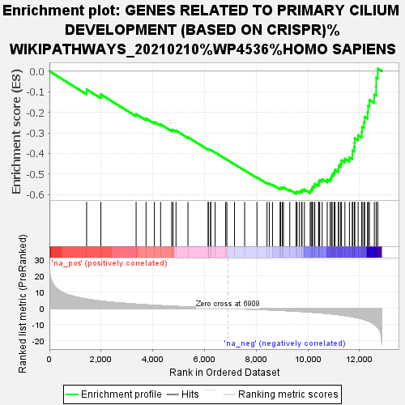

| | | Dataset | SevereRank |
| Phenotype | NoPhenotypeAvailable |
| Upregulated in class | na_neg |
| GeneSet | GENES RELATED TO PRIMARY CILIUM DEVELOPMENT (BASED ON CRISPR)%WIKIPATHWAYS_20210210%WP4536%HOMO SAPIENS |
| Enrichment Score (ES) | -0.596429 |
| Normalized Enrichment Score (NES) | -2.2034566 |
| Nominal p-value | 0.0 |
| FDR q-value | 0.009882972 |
| FWER p-Value | 0.02 |
Table: GSEA Results Summary

Fig 1: Enrichment plot: GENES RELATED TO PRIMARY CILIUM DEVELOPMENT (BASED ON CRISPR)%WIKIPATHWAYS_20210210%WP4536%HOMO SAPIENS
Profile of the Running ES Score & Positions of GeneSet Members on the Rank Ordered List
| SYMBOL | RANK IN GENE LIST | RANK METRIC SCORE | RUNNING ES | CORE ENRICHMENT | | 1 | SCLT1 | 1440 | 5.769 | -0.0888 | No |
| 2 | CEP295 | 1991 | 4.552 | -0.1130 | No |
| 3 | KIF3A | 3355 | 2.621 | -0.2087 | No |
| 4 | TTC23 | 3739 | 2.209 | -0.2296 | No |
| 5 | IFT81 | 4062 | 1.883 | -0.2470 | No |
| 6 | TRAF3IP1 | 4302 | 1.685 | -0.2587 | No |
| 7 | PIBF1 | 4731 | 1.352 | -0.2866 | No |
| 8 | DYNLT1 | 4782 | 1.320 | -0.2850 | No |
| 9 | CEP162 | 4898 | 1.230 | -0.2890 | No |
| 10 | SASS6 | 5361 | 0.932 | -0.3212 | No |
| 11 | IFT80 | 6143 | 0.428 | -0.3805 | No |
| 12 | ARL3 | 6147 | 0.427 | -0.3790 | No |
| 13 | KIAA0753 | 6236 | 0.373 | -0.3843 | No |
| 14 | IFT20 | 6241 | 0.371 | -0.3831 | No |
| 15 | C2CD3 | 6411 | 0.263 | -0.3952 | No |
| 16 | BBS9 | 6819 | 0.046 | -0.4269 | No |
| 17 | WDPCP | 6865 | 0.022 | -0.4303 | No |
| 18 | TTC8 | 7162 | -0.129 | -0.4529 | No |
| 19 | IFT74 | 7553 | -0.334 | -0.4820 | No |
| 20 | EVC2 | 8030 | -0.607 | -0.5167 | No |
| 21 | EFCAB7 | 8419 | -0.847 | -0.5436 | No |
| 22 | OFD1 | 8507 | -0.898 | -0.5467 | No |
| 23 | CEP104 | 8632 | -0.983 | -0.5523 | No |
| 24 | IFT140 | 8924 | -1.196 | -0.5701 | No |
| 25 | TMEM17 | 8949 | -1.219 | -0.5670 | No |
| 26 | ARMC9 | 9012 | -1.260 | -0.5666 | No |
| 27 | CEP76 | 9055 | -1.303 | -0.5645 | No |
| 28 | BBS10 | 9299 | -1.493 | -0.5774 | No |
| 29 | TRAPPC11 | 9544 | -1.708 | -0.5894 | Yes |
| 30 | HSPB11 | 9583 | -1.744 | -0.5852 | Yes |
| 31 | CDK20 | 9674 | -1.829 | -0.5847 | Yes |
| 32 | CEP19 | 9759 | -1.906 | -0.5834 | Yes |
| 33 | MKS1 | 9772 | -1.917 | -0.5764 | Yes |
| 34 | BBS12 | 9866 | -2.011 | -0.5754 | Yes |
| 35 | TUBE1 | 10090 | -2.261 | -0.5835 | Yes |
| 36 | CEP44 | 10126 | -2.311 | -0.5767 | Yes |
| 37 | IFT27 | 10168 | -2.354 | -0.5702 | Yes |
| 38 | BBS4 | 10181 | -2.366 | -0.5613 | Yes |
| 39 | ARL6 | 10256 | -2.447 | -0.5570 | Yes |
| 40 | TUBD1 | 10268 | -2.458 | -0.5478 | Yes |
| 41 | CC2D2A | 10414 | -2.636 | -0.5482 | Yes |
| 42 | CBY1 | 10428 | -2.657 | -0.5383 | Yes |
| 43 | BBS7 | 10457 | -2.696 | -0.5294 | Yes |
| 44 | KIF3B | 10554 | -2.823 | -0.5252 | Yes |
| 45 | TMEM107 | 10749 | -3.080 | -0.5277 | Yes |
| 46 | TMEM67 | 10866 | -3.269 | -0.5233 | Yes |
| 47 | DYNC2LI1 | 10910 | -3.363 | -0.5127 | Yes |
| 48 | DYNC2H1 | 10940 | -3.417 | -0.5009 | Yes |
| 49 | EVC | 11016 | -3.530 | -0.4922 | Yes |
| 50 | FBF1 | 11049 | -3.588 | -0.4799 | Yes |
| 51 | ARL13B | 11184 | -3.864 | -0.4745 | Yes |
| 52 | IFT172 | 11194 | -3.879 | -0.4592 | Yes |
| 53 | IFT52 | 11272 | -4.052 | -0.4485 | Yes |
| 54 | WDR35 | 11302 | -4.125 | -0.4337 | Yes |
| 55 | INPP5E | 11433 | -4.393 | -0.4258 | Yes |
| 56 | IFT57 | 11607 | -4.832 | -0.4194 | Yes |
| 57 | TTBK2 | 11722 | -5.173 | -0.4069 | Yes |
| 58 | BBS5 | 11727 | -5.187 | -0.3859 | Yes |
| 59 | TTC30B | 11796 | -5.370 | -0.3690 | Yes |
| 60 | TTC26 | 11806 | -5.400 | -0.3475 | Yes |
| 61 | LZTFL1 | 11812 | -5.421 | -0.3255 | Yes |
| 62 | MIB1 | 11945 | -5.867 | -0.3116 | Yes |
| 63 | CLUAP1 | 12084 | -6.377 | -0.2961 | Yes |
| 64 | BBS2 | 12098 | -6.432 | -0.2706 | Yes |
| 65 | RAB23 | 12169 | -6.772 | -0.2481 | Yes |
| 66 | TMEM231 | 12198 | -6.922 | -0.2218 | Yes |
| 67 | BBS1 | 12310 | -7.606 | -0.1991 | Yes |
| 68 | KIFAP3 | 12333 | -7.738 | -0.1689 | Yes |
| 69 | TMEM216 | 12384 | -8.073 | -0.1395 | Yes |
| 70 | TCTN1 | 12571 | -9.724 | -0.1139 | Yes |
| 71 | TCTN2 | 12644 | -10.688 | -0.0755 | Yes |
| 72 | TCTN3 | 12647 | -10.769 | -0.0312 | Yes |
| 73 | CEP97 | 12706 | -11.656 | 0.0124 | Yes |
Table: GSEA details [plain text format]
Fig 2: GENES RELATED TO PRIMARY CILIUM DEVELOPMENT (BASED ON CRISPR)%WIKIPATHWAYS_20210210%WP4536%HOMO SAPIENS: Random ES distribution
Gene set null distribution of ES for GENES RELATED TO PRIMARY CILIUM DEVELOPMENT (BASED ON CRISPR)%WIKIPATHWAYS_20210210%WP4536%HOMO SAPIENS